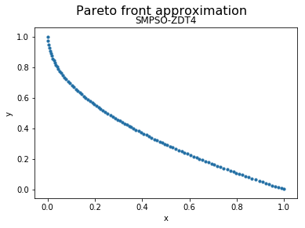

SMPSO¶
Example¶
[1]:
from jmetal.algorithm.multiobjective.smpso import SMPSO
from jmetal.operator.mutation import PolynomialMutation
from jmetal.problem import ZDT4
from jmetal.util.archive import CrowdingDistanceArchive
from jmetal.util.termination_criterion import StoppingByEvaluations
problem = ZDT4()
max_evaluations = 25000
algorithm = SMPSO(
problem=problem,
swarm_size=100,
mutation=PolynomialMutation(probability=1.0 / problem.number_of_variables, distribution_index=20),
leaders=CrowdingDistanceArchive(100),
termination_criterion=StoppingByEvaluations(max=max_evaluations)
)
algorithm.run()
solutions = algorithm.get_result()
We can now visualize the Pareto front approximation:
[3]:
from jmetal.lab.visualization.plotting import Plot
from jmetal.util.solution import get_non_dominated_solutions
front = get_non_dominated_solutions(solutions)
plot_front = Plot(plot_title='Pareto front approximation', axis_labels=['x', 'y'])
plot_front.plot(front, label='SMPSO-ZDT4')

API¶
- class jmetal.algorithm.multiobjective.smpso.SMPSO(problem: ~jmetal.core.problem.FloatProblem, swarm_size: int, mutation: ~jmetal.core.operator.Mutation, leaders: ~jmetal.util.archive.BoundedArchive | None, dominance_comparator: ~jmetal.util.comparator.Comparator = <jmetal.util.comparator.DominanceComparator object>, termination_criterion: ~jmetal.util.termination_criterion.TerminationCriterion = <jmetal.util.termination_criterion.StoppingByEvaluations object>, swarm_generator: ~jmetal.util.generator.Generator = <jmetal.util.generator.RandomGenerator object>, swarm_evaluator: ~jmetal.util.evaluator.Evaluator = <jmetal.util.evaluator.SequentialEvaluator object>)[source]¶
Bases:
ParticleSwarmOptimization